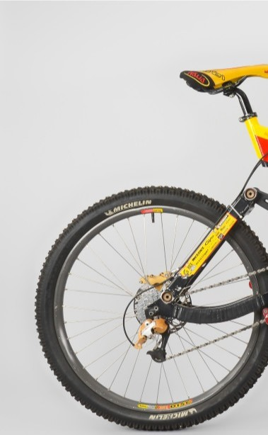
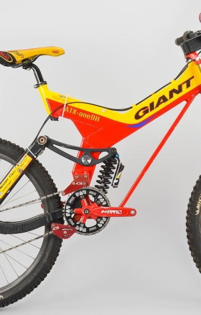
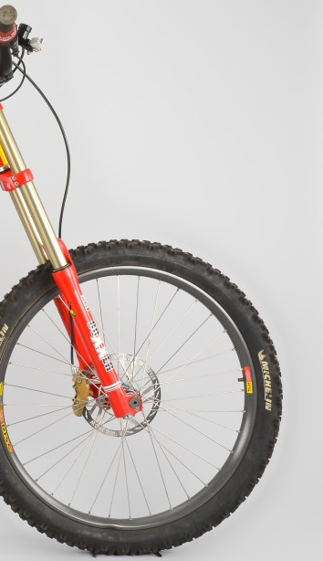
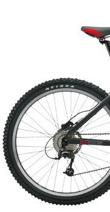
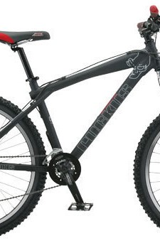
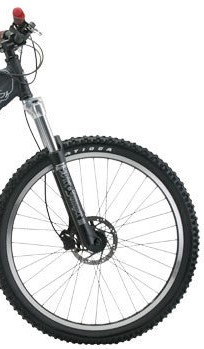
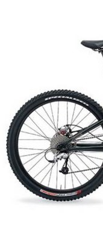
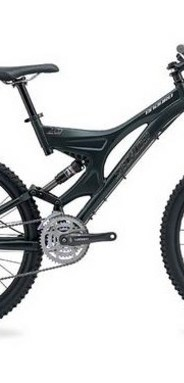
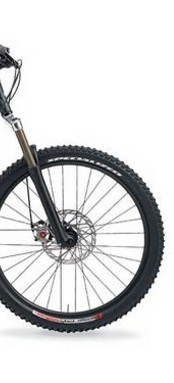

Дополнительная информация
Так выглядели даунхильные велосипеды в конце 90-х:



А на таких велосипедах пуляли дёрты в начале 2000-ых:



Также хотел бы показать один из популярных велосипедов 2000-ых для эндуро:



Отличия от современных велосипедов:
- База велосипедов была где-то сильно короче, где-то длиннее
- Рули были намного уже, в те времена было модно кататься с такими
- Колёса 24 и 26 дюймов
- Вес велосипедов был сильно больше